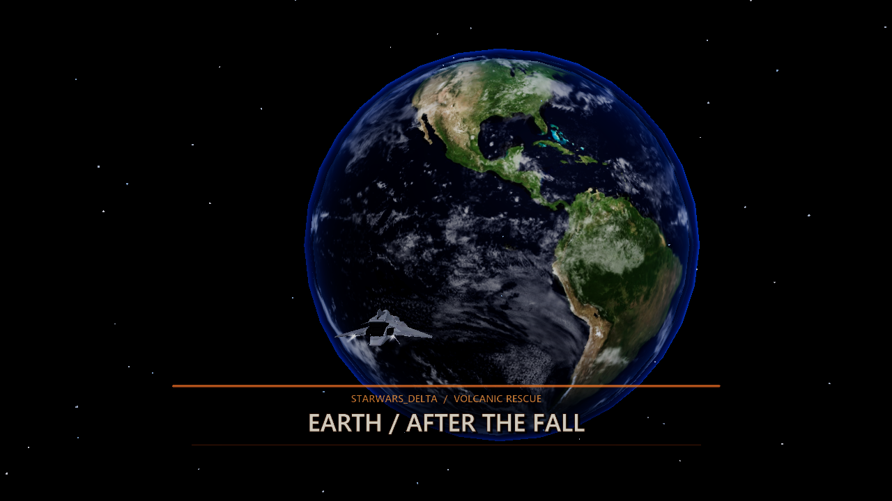
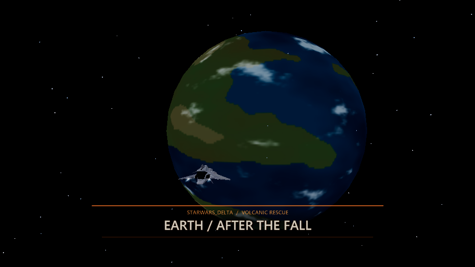

לפתיחת התמונה בגודל מלאאחרי השדרוג
צילום חדש של המצלמה הפעילה דרך כלי Unity Pipeline Capture, ברזולוציית 1280×720. נראה שכדור הארץ מציג טקסטורת פני שטח מפורטת ושכבת עננים.
השוואה לצילום QA קודם

לפני שדרוג 4K
פריים 0.5 שניות מארכיון AFTER_V5, שצולם לפני בניית הפרפאב החדש.
לאחר שדרוג 4K
צילום מצלמת הסרט בגרסה החדשה. זמן הדגימה המדויק במצלמה לא תועד ולכן אין לייחס אותו ל־0.5 שניות.
מה נבדק ומה עדיין חסר
- פרפאב מקור משותף: PF_S7_EARTH_CINEMATIC_4K, עם שכבת פני שטח, עננים והילה.
- אומת שהפרפאב הוצמד לשני אובייקטים של כדור הארץ בסצנה באמצעות כלי Unity.
- הצילום החדש הופק במצלמת Unity, ללא הדמיה חיצונית או יצירת תמונה בבינה מלאכותית.
- עדיין נדרשת ביקורת חזותית על שוטי ההר הגעשי, הקוקפיט, המנועים והנחיתה, וכן בדיקה מלאה ב־Play Mode.
מפת פני השטח: NASA Blue Marble Next Generation. עננים ומפת לילה: Solar System Scope, CC BY 4.0. סטטוס QA: PARTIAL / REVIEW REQUIRED.